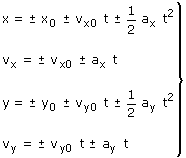

|
Ecuaciones del tiro 
Los parámetros x0, y0, vx0, vy0 se obtienen descomponiendo los vectores posición y velocidad iniciales sobre los ejes Ecuaciones del tiro con ejes inclinados Normalmente los ejes más convenientes son horizontal y verti-cal, pero si se quiere calcular el punto de impacto con una su-perficie inclinada lo mejor será tomar un eje paralelo a dicha su-perficie y el otro perpendicular. La diferencia con un tiro 'normal' está en que también hay que descomponer la aceleración Los parámetros x0, y0, vx0, vy0 , ax , ay se obtienen descom-poniendo los vectores posición, velocidad iniciales y gravedad sobre los ejes Signos Hay que poner signo a los parámetros x0, vx0,
y0, vy0, g, ax, ay pues estos
representan módulos de las correspondientes mag-nitudes |